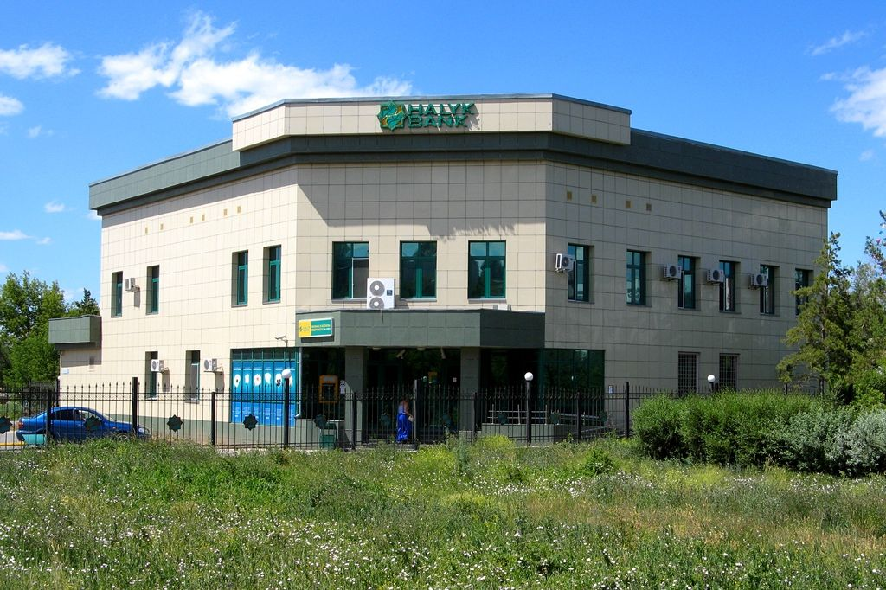

A Record Year, Then a Squeeze: Halyk Bank in 2025-2026
Net income passed ₸1 trillion in 2025, then fell 15% in the first half of 2026.


Summary
Halyk Bank, Kazakhstan's largest bank by assets, earned ₸1,058 billion in 2025, 15% more than in 2024, with a return on equity of 32.6%. In the first half of 2026 net income fell 15.3%. Stricter reserve requirements from the National Bank, tighter rules on consumer loans and dearer deposits cut the net interest margin from 7.3% to 6.8%.
Key findings
- Net income rose from ₸693 billion in 2023 to ₸1,058 billion in 2025, up 53% in two years.
- Return on average equity stayed above 32% in all three years, peaking at 34.0% in 2024.
- In 2025 interest expense grew faster than interest income, 32% against 24%, and the margin slipped from 7.2% to 7.1%.
- In the first half of 2026 net income fell 15.3%, to ₸448 billion, and the margin dropped to 6.8%.
How Halyk got to ₸1 trillion
Halyk earns most of its money the way a classic bank does: it lends at a higher rate than it pays on deposits. In 2025 its interest income grew 24%, to ₸2,695 billion, and its net loans reached ₸13.1 trillion, while customers kept ₸14.3 trillion with the bank.
It is also cheap to run. Operating costs took 17.5% of income in 2025, down from 19.2% in 2023. Together with a margin above 7%, that gave a return on equity of 32.6%.
The warning sign came in the same year. Interest expense grew by 32%, to ₸1,407 billion, faster than interest income, because the bank had to pay more for deposits.
| 2023 | 2024 | 2025 | 1H 2025 | 1H 2026 | |
|---|---|---|---|---|---|
| Net income, ₸ billion | 693 | 921 | 1,058 | 529 | 448 |
| Return on average equity | 32.1% | 34.0% | 32.6% | ||
| Net interest margin | 6.1% | 7.2% | 7.1% | 7.3% | 6.8% |
| Cost-to-income ratio | 19.2% | 17.6% | 17.5% | 17.2% | 19.2% |
2023 margin as restated in the FY 2024 release. Sources: Halyk Bank, FY 2025 results; FY 2024 results; FY 2023 results; 1H 2026 results.
What changed in 2026
Net income for the first six months of 2026 was ₸447.6 billion, against ₸528.6 billion a year earlier. The bank names three causes.
First, the National Bank of Kazakhstan raised minimum reserve requirements, so banks must keep more money at the central bank, where it earns little. Another increase started in April 2026. Halyk says that without this effect its margin would have been 7.2% instead of 6.8%.
Second, the regulator tightened the rules on retail lending. Third, the average rate Halyk pays on customer accounts rose while the average rate on its loans stayed flat. Net interest income grew only 2.6%, to ₸657.6 billion, while interest expense rose 21.6%.
Costs also took a bigger share: the cost-to-income ratio rose from 17.2% to 19.2%. Lending kept growing, with gross loans up 13.2% over the year to June 2026, and the cost of risk stayed at 1.4%, which the bank calls a normal level. So the fall in profit comes from the price of money, not from bad loans.
Valuation
Halyk's shares closed at ₸372.93 on 30 October 2026. With 10.9 billion shares in circulation (13.4 billion issued, less 2.5 billion the bank has bought back), the market value is about ₸4.1 trillion (Table 2). That is 3.8 times the bank's 2025 net income and 1.12 times its equity of ₸3.64 trillion at the end of June 2026.
For a bank that earned more than 30% on its equity in each of the last three years, paying only a little above book value is cheap. Kaspi trades at 7.6 times its profit. Two things explain part of the gap: profit is falling in 2026, and investors may expect regulation to keep squeezing the margin. Halyk also pays a lot out. Shareholders received ₸30.10 per share in May 2026 and another ₸28.09 in September, a yield of 15.6% at the current price.
| Share price, 30 October 2026 | ₸372.93 |
| Market value | ₸4,070 billion (US$9.0 billion) |
| Price to 2025 profit (P/E) | 3.8 |
| Price to book value (P/B) | 1.12 |
| Dividend yield | 15.6% |
Book value is total equity at 30 June 2026. Dividend yield uses both payments for 2025. Sources: KASE; KASE, Halyk shares; 1H 2026 results.
How it compares
Of the seven companies covered on this site, Halyk Bank is the cheapest by price to 2025 profit. The table ranks them from lowest to highest.
| Company | Market value, US$ bn | P/E | P/B | Dividend yield |
|---|---|---|---|---|
| Halyk Bank | 9.0 | 3.8 | 1.12 | 15.6% |
| Geely Automobile | 19.0 | 7.5 | n/a | 3.6% |
| Kaspi.kz | 17.8 | 7.6 | n/a | 9.4% |
| Kazatomprom | 16.2 | 12.9 | n/a | 4.6% |
| KazMunayGas | 48.5 | 20.5 | n/a | 1.6% |
| Air Astana | 0.6 | 41.0 | 1.50 | none |
| China Southern Airlines | 6.3 | 48.9 | 1.17 | none |
P/E is the market value divided by 2025 profit; P/B uses the latest reported equity, where shown in the notes. A low P/E can mean a cheap share or a profit the market expects to fall. Sources: KASE; Stock Analysis; National Bank of Kazakhstan exchange rates.
Who owns the company
Halyk is controlled by Holding Group Almeks, which holds 61.9% of the shares in circulation. Almeks belongs to Timur Kulibayev and Dinara Kulibayeva. Most of the remaining shares, 35.0%, are held by the Bank of New York Mellon as nominee for the holders of Halyk's global depositary receipts, which trade in London and Astana. With about 62% of the dividend going to Almeks, the payout policy matters as much to the controlling family as to outside investors.
Risks
- The National Bank kept its base rate at 18% in March 2026. If rates stay high longer, deposits stay expensive and the margin stays under pressure.
- Further limits on consumer lending would slow the bank's retail loan book.
- A slowdown in Kazakhstan's economy would raise the cost of risk, which is now low.
My view
I think the fall in Halyk's profit in 2026 is mostly temporary. The bank did not start making bad loans: its cost of risk is still at a normal level. Its problem is the price of money, and that should ease once the National Bank starts cutting the base rate. Still, I do not expect a return on equity of 34% again soon, because the stricter reserve rules are here to stay. I think the regulator is right to limit consumer loans, even if banks earn less, because a bank should not grow by lending people money they will struggle to repay. Compared with Kaspi, Halyk looks like the slower but safer business. I would not buy the shares now, but I would consider them after the first rate cut.
This note is independent research for information and learning. It is not investment advice or a recommendation to buy or sell any security.
Notes and method
- All figures come from Halyk Bank's consolidated IFRS results, listed under Sources. Net income is attributable to common shareholders.
- Net interest margin is the bank's own measure: net interest income divided by average interest-earning assets. The 2023 figure is the restated 6.1% from the FY 2024 release.
- Half-year figures are compared with the same half of 2025, as the bank reports them. Percentage changes are calculated by the author.
Sources
- Halyk Bank, Consolidated financial results for the FY 2025 (London Stock Exchange RNS, March 2026)
- Halyk Bank, Consolidated financial results for the FY 2024 (London Stock Exchange RNS)
- Halyk Bank, Consolidated financial results for the FY 2023 (London Stock Exchange RNS)
- Halyk Bank, Interim consolidated results for 1H 2026, press release (18 August 2026)
- Halyk Bank, Consolidated financial results for the 1Q 2026 (London Stock Exchange RNS, May 2026)
- Kazakhstan Stock Exchange (KASE), share pages for KSPI, HSBK, KZAP, KMGZ and AIRA, trades on 30 October 2026
- Kazakhstan Stock Exchange, Information on shares and shareholders of Halyk Bank of Kazakhstan as of July 1, 2026
- Forbes Kazakhstan, Kulibayevs consider selling part of their stake in Halyk Bank (in Russian)
Download
Chingiz Bakytzhanov (2026). A Record Year, Then a Squeeze: Halyk Bank in 2025-2026. Steppe & Silk Research, 17 October 2026. https://steppesilk.com/research/halyk-bank-2026.html
Found an error? Email chingiz.bakytjanov@gmail.com. Corrections are listed here with their date.